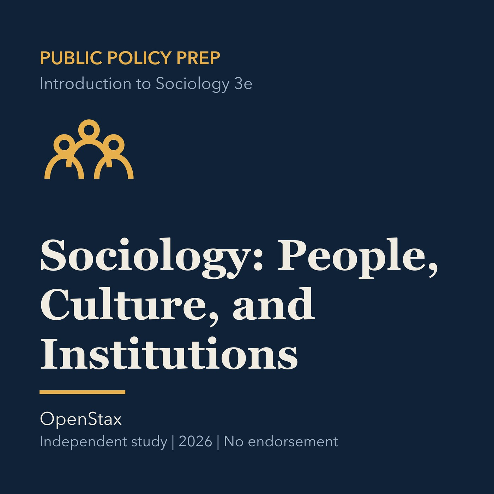

EPISODE 03
Sociology: Connecting People, Culture, and Institutions
Uses sociological perspectives to connect individual experience with culture, organizations, and institutions.

- Stable GUID
ac2b05c9-9f95-54b3-9bb0-1ca8bc192835- Release
- public-policy-prep-v2026.2
- SHA-256
2a241efdd9a3c735189379342c18f567f92f0fccb3a23346db71e992b384500a